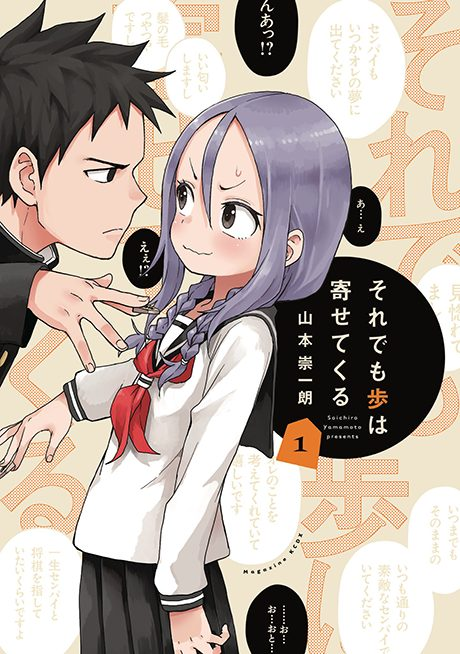

When Will Ayumu Make His Move?
それでも歩は寄せてくる
Ayumu joins the shogi club because he's in love with its leader, and vows not to confess until he beats her.
After the anime, read the manga from Chapter 113.
6.9AniList score
—Animeter, no votes yet
12episodes
Rate it or report where you stopped
Is it worth pushing through?
Built from what visitors report across all 12 episodes.
Loading reports…Checking what other people said about this one.
Sign in above with your email to add your report.
More like When Will Ayumu Make His Move?
 Manga Ch. 487.8
Manga Ch. 487.8
 Manga Vol. 47.5
Manga Vol. 47.5
 Manga Ch. 667.6
Manga Ch. 667.6
 Manga Ch. 1528.3
Manga Ch. 1528.3
 Unclear7.7
Unclear7.7
 Unclear8.3
Unclear8.3
 Manga Ch. 1148.1
Manga Ch. 1148.1
 Manga Vol. 48.0
Manga Vol. 48.0
 Unclear7.3
Unclear7.3
 Manga Ch. 17.4
Manga Ch. 17.4
 Manga Ch. 177.2
Manga Ch. 177.2
 Manga Ch. 408.4
Manga Ch. 408.4